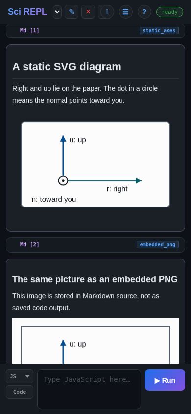
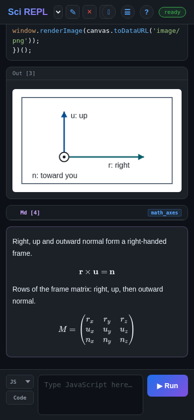

কাজের মাধ্যমে শিখুন
ছবি, ডায়াগ্রাম এবং সমীকরণ যোগ করুন
একটি ওয়ার্কবুকে কোডের পাশাপাশি ছবির মাধ্যমেও কোনো ধারণা ব্যাখ্যা করা যায়। একই সাধারণ স্থানাঙ্ক ফ্রেম প্রদর্শনের তিনটি উপায় চেষ্টা করুন: Markdown-এ একটি স্ট্যাটিক ছবি, JavaScript দিয়ে আঁকা একটি ছবি এবং KaTeX দিয়ে টাইপসেট করা একটি সমীকরণ। আপনার Python, R, প্যাকেজ ইনস্টলেশন বা কোনো AI অ্যাকাউন্টের প্রয়োজন নেই।
উদাহরণ এবং স্ক্রিনশটগুলো SciREPL Free ব্রাউজার বিল্ডে তারিখে পরীক্ষা করা হয়েছিল। স্ক্রিনশটগুলোতে একটি সংকীর্ণ ব্রাউজার ভিউপোর্ট ব্যবহার করা হয়েছে; এগুলো অ্যান্ড্রয়েড ক্যাপচার নয়। অ্যান্ড্রয়েডে একই নিয়ন্ত্রণ ব্যবহার করা হয়, তবে সেগুলোর অবস্থান ভিন্ন হতে পারে। এই গাইডের জন্য Pro এবং প্রতিটি প্রকাশিত অ্যাপ সংস্করণ পরীক্ষা করা হয়নি।
| আপনি যা চান | সেলের ধরন | যা ফলাফল তৈরি করে |
|---|---|---|
| একটি নির্দিষ্ট ডায়াগ্রাম বা ছবি | Markdown (Md) | ইনলাইন SVG বা একটি এমবেড করা PNG, যা সেলের টেক্সটে সংরক্ষিত থাকে |
| কোড দ্বারা গণনাকৃত বা আঁকা একটি ছবি | কোড → JavaScript (JS) | একটি ক্যানভাস, যা window.renderImage(...) দিয়ে প্রদর্শিত হয় |
| একটি সূত্র বা ম্যাট্রিক্স | Markdown (Md) | $$ ডিলিমিটারের মধ্যে TeX-শৈলীর গণিত, যা KaTeX দ্বারা রেন্ডার করা হয় |
ধাপ 1
উদাহরণ ওয়ার্কবুকটি খুলুন
সহযোগী ফাইলটিতে একটি এমবেড করা PNG সহ সম্পূর্ণ উদাহরণ রয়েছে। এটি সবকিছুকে একটি ছোট ওয়ার্কবুকে রাখে যাতে আপনাকে দীর্ঘ Base64 ইমেজ স্ট্রিং টাইপ করতে না হয়।
- গ্রাফিক্স উদাহরণের ওয়ার্কবুক (.srwb) ডাউনলোড করুন। মূল ফাইলটি সংরক্ষণ করুন, এর
.srwbএক্সটেনশনটি বজায় রাখুন। যদি আপনার ব্রাউজার টেক্সট প্রদর্শন করে, তবে এর সংরক্ষণ/ডাউনলোড অ্যাকশন ব্যবহার করুন। আপনি যে ফোল্ডারে এটি সংরক্ষণ করেছেন তা মনে রাখুন। - SciREPL খুলুন। অ্যাপের শীর্ষে থাকা হেডারে, ☰ মেনু খুঁজুন, যা হলো তিনটি অনুভূমিক রেখা বিশিষ্ট বোতাম। এটিতে ট্যাপ বা ক্লিক করুন।
- 📂 ফাইল ইমপোর্ট করুন (যেমন: .srwb, .ipynb, .csv, .py, .zip) বেছে নিন। প্রয়োজনে মেনুর ভেতরে স্ক্রোল করুন। আপনার ডিভাইসের ফাইল পিকার থেকে Downloads বা আপনার নির্বাচিত ফোল্ডার থেকে
workbook-graphics.srwbনির্বাচন করুন। - মেনুটি খোলা থাকলে তা বন্ধ করুন এবং ওয়ার্কবুক নির্বাচকে নতুন Workbook Graphics ট্যাবটি নির্বাচন করুন। আপনার বিদ্যমান ট্যাবগুলো সংরক্ষিত থাকবে।
static_axes,embedded_png,canvas_axesএবংmath_axesনামের চারটি সেল খুঁজুন। কোড চালানোর আগে সেগুলো পড়ুন। স্ট্যাটিক ডায়াগ্রাম এবং সমীকরণগুলো তাদের Markdown উৎস থেকে দেখা যায়; JavaScript ছবিটি শুধুমাত্র এর সেল চালানোর পরেই প্রদর্শিত হয়।
ইমপোর্ট করা মানে চালানো নয়। একটি .srwb ইমপোর্ট এর কোড এক্সিকিউট করে না, এমনকি অটো-এক্সিকিউট সেটিং সক্রিয় থাকলেও নয়। এই পাঠে শুধুমাত্র canvas_axes-এর JavaScript এক্সিকিউশন প্রয়োজন। কোনো সব সেল রান করুন ধাপ নেই।
ডাউনলোড বা পিকার সম্পর্কে আরো বিস্তারিত জানতে চান? ম্যানুয়াল ওয়ার্কবুক ইমপোর্ট ওয়াকথ্রু অনুসরণ করুন। সংরক্ষিত সেলগুলোতে ওপরের নামগুলো দেখা যায়; নামযুক্ত-সেল পাথ টিউটোরিয়াল ব্যাখ্যা করে কীভাবে সেগুলো নির্ধারণ ও ব্যবহার করতে হয়। আপনি নিচের ধাপগুলো ব্যবহার করে ইতিমধ্যে খোলা থাকা একটি ওয়ার্কবুকেও এই উদাহরণগুলো তৈরি করতে পারেন।
ধাপ 2 · পদ্ধতি 1
Markdown-এ একটি স্ট্যাটিক ডায়াগ্রাম রাখুন
আপনার মুখোমুখি থাকা একটি কাগজের টুকরোর কথা ভাবুন। r কাগজের ডানদিকে নির্দেশ করে, u এর ওপরের দিকে নির্দেশ করে এবং n কাগজ থেকে বাইরের দিকে আপনার দিকে নির্দেশ করে। একটি বিন্দুর চারপাশের বৃত্ত সেই বহির্মুখী দিককে প্রকাশ করে, ঠিক যেমন আপনার দিকে আসা একটি তীরের অগ্রভাগ দেখার মতো।

ইমপোর্ট করা ডায়াগ্রামটি সম্পাদনা করুন
static_axesখুঁজুন। সেই সংরক্ষিত সেলের নিজস্ব হেডারে এর ✎ পেন্সিলে ট্যাপ করুন, যা ✕-এর কাছাকাছি অবস্থিত। এটি বিদ্যমান সেলের সোর্স খোলে; নতুন-সেল প্যানেল অন্য একটি সেল তৈরি করবে।- সেলের ধরনের বোতামটি Md-এ সেট করে রাখুন। SVG টেক্সটে,
r: rightপরিবর্তন করেr: acrossকরুন। - সেই সেলের ▶ রান বোতামে ট্যাপ করে Markdown আবার সংরক্ষণ ও রেন্ডার করুন। একটি Md সেলের জন্য, এই বোতামটি টেক্সট রেন্ডার করে; এটি JavaScript এক্সিকিউট করে না বা ল্যাঙ্গুয়েজ রানটাইম শুরু করে না।
অথবা আপনার নিজস্ব Markdown সেল তৈরি করুন
- নতুন-সেল প্যানেল খুঁজুন যেখানে আপনি পরবর্তী সেল টাইপ করবেন। এটি সঙ্কুচিত থাকলে, অ্যাপের শিরোনামের কাছে থাকা ⌃ নতুন-সেল প্যানেল দেখান বোতামটি ব্যবহার করুন।
- কোড চিহ্নিত সেলের ধরনের বোতামে ট্যাপ করুন যাতে এটি পরিবর্তিত হয়ে Md হয়। Markdown হলো একটি সেলের ধরন, ভাষার ড্রপডাউনের কোনো এন্ট্রি নয়।
- নিচের টেক্সট ফিল্ডে সম্পূর্ণ SVG কপি করুন, কোনো Markdown কোড ফেন্স যোগ না করে (
```)। আশেপাশের লেখার সাথে SVG-এর মাঝে একটি ফাঁকা লাইন রাখুন। - ▶ রান-এ ট্যাপ করে রেন্ডার করা Markdown সেলটি যোগ করুন। আপনার কাগজ এবং তিনটি দিকের লেবেলই দেখতে পাওয়া উচিত।
<svg xmlns="http://www.w3.org/2000/svg"
viewBox="0 0 360 220" width="100%" height="220"
role="img" aria-label="Right, up and outward normal on paper">
<title>A paper coordinate frame</title>
<rect x="20" y="18" width="320" height="184"
rx="6" fill="#ffffff" stroke="#526170" stroke-width="2" />
<path d="M110 145 H280" fill="none" stroke="#075d69" stroke-width="3" />
<polygon points="280,145 267,138 267,152" fill="#075d69" />
<path d="M110 145 V48" fill="none" stroke="#064d91" stroke-width="3" />
<polygon points="110,48 103,61 117,61" fill="#064d91" />
<circle cx="110" cy="145" r="10" fill="#ffffff" stroke="#14191f" stroke-width="2" />
<circle cx="110" cy="145" r="3" fill="#14191f" />
<text x="204" y="168" fill="#14191f" font-size="16">r: right</text>
<text x="124" y="62" fill="#14191f" font-size="16">u: up</text>
<text x="42" y="190" fill="#14191f" font-size="16">n: toward you</text>
</svg>SciREPL Markdown স্যানিটাইজ করে। এই উদাহরণে সাধারণ SVG আকার, টেক্সট এবং স্পষ্ট fill/stroke অ্যাট্রিবিউট ব্যবহার করা হয়েছে। এর তীরের মাথাগুলো বহুভুজ: স্যানিটাইজার এড়িয়ে টিকে থাকার জন্য marker-end="url(...)", একটি <style> ব্লক, স্ক্রিপ্ট বা অ্যানিমেশনের ওপর নির্ভর করবেন না।
পরিবর্তে একটি এমবেড করা PNG ব্যবহার করুন
অন্য স্ট্যাটিক বিকল্পটি হলো একটি PNG যার Base64 ডেটা সরাসরি Markdown সোর্সে সংরক্ষিত থাকে। মানক Markdown ছবির সিনট্যাক্স দেখতে এইরকম:
এই লাইনটি কেবল ফরম্যাট দেখায়, কোনো কার্যকরী ছবি নয়: প্লেসহোল্ডারটি সম্পূর্ণ এনকোড করা PNG দিয়ে প্রতিস্থাপন করুন, অথবা ইতিমধ্যে কাজ করা embedded_png সেলটি ব্যবহার করুন। base64,-এর পরের অংশটি ছবির ডেটা, ফাইলের নাম নয়। এটি এক লাইনে রাখুন।
ছোট স্ক্রিনে সেলের সাথে মানানসই ছবির জন্য, সহযোগী ফাইলের embedded_png সেলটিতে width="100%" সহ নিচের সমতুল্য ইনলাইন HTML ব্যবহার করা হয়েছে। এটি এখনও Markdown-এর ভেতরে সংরক্ষিত থাকে, কোড আউটপুট হিসেবে নয়:
<img alt="Paper axes" width="100%"
src="data:image/png;base64,PASTE_THE_COMPLETE_BASE64_PNG_HERE">একটি স্ট্যাটিক পদ্ধতি বেছে নিন: একটি ছোট সম্পাদনাযোগ্য ডায়াগ্রামের জন্য একটি ইনলাইন SVG উপাদান ব্যবহার করুন, অথবা একটি রাস্টার ছবির জন্য একটি data:image/png;base64,... ছবি ব্যবহার করুন। একটি SVG ডেটা URL যেমন data:image/svg+xml,... ইনলাইন SVG-এর মতো নয় এবং পরীক্ষিত বিল্ডে তা ব্লক করা হয়েছে। দূরবর্তী ছবির URL-ও সেখানে ব্লক করা হয়েছে। প্রদর্শনের সময় এই দুটি স্বায়ত্তশাসিত উদাহরণের জন্য কোনো ছবি ডাউনলোডের প্রয়োজন হয় না।
উভয় স্ট্যাটিক উদাহরণই Markdown সোর্সে থাকে। ওয়ার্কবুক ইমপোর্টের পরে কোড না চালিয়েই এগুলো প্রদর্শন করা যায়।
ধাপ 3 · পদ্ধতি 2
JavaScript দিয়ে একটি ছবি আঁকুন
একটি স্ট্যাটিক ছবি একই রকম থাকে যতক্ষণ না আপনি এর সোর্স সম্পাদনা করেন। কোনো প্রোগ্রামের মাধ্যমে হিসাব করা বা আঁকা ছবির জন্য, একটি কোড সেল ব্যবহার করুন এবং JS - JavaScript নির্বাচন করুন। এই উদাহরণটি একটি ক্যানভাসে আঁকে, এটিকে PNG-তে রূপান্তর করে এবং সেই ছবিটি সেলের আউটপুটে পাঠায়।
- ইমপোর্ট করা ওয়ার্কবুকে, ✎ পেন্সিলটিতে ট্যাপ করুন
canvas_axes-এর মধ্যে। সেলের ধরন কোড এবং এর ভাষা JS - JavaScript কিনা তা দেখে নিন (কমপ্যাক্ট নির্বাচকে কেবল JS দেখা যেতে পারে)। - নিচের কোডটি পড়ুন, যা সেই সেলের সম্পূর্ণ প্রোগ্রাম। এর জন্য অন্য কোনো সেল, ফাইল, প্যাকেজ বা নেটওয়ার্ক অনুরোধের প্রয়োজন নেই।
- সেই সেলের ▶ রান-এ ট্যাপ করুন। JavaScript সোর্সের নিচে একটি ছবি প্রদর্শিত হওয়া উচিত।
এর পরিবর্তে একটি নতুন সেল তৈরি করতে, নতুন-সেল প্যানেলে যান, প্রয়োজনে Md-কে আবার কোড-এ পরিবর্তন করুন এবং ভাষা ড্রপডাউন থেকে JS - JavaScript বেছে নিন। কোডটি পেস্ট করুন, তারপর ▶ রান-এ ট্যাপ করুন। যদি JavaScript লুকানো থাকে, তবে ☰ মেনু → ভাষা খুঁজুন এবং এটি সক্ষম করুন।
(() => {
const canvas = document.createElement('canvas');
canvas.width = 360;
canvas.height = 220;
const ctx = canvas.getContext('2d');
ctx.fillStyle = '#ffffff';
ctx.fillRect(0, 0, 360, 220);
ctx.strokeStyle = '#526170';
ctx.lineWidth = 2;
ctx.strokeRect(20, 18, 320, 184);
function arrow(x1, y1, x2, y2, color) {
const angle = Math.atan2(y2 - y1, x2 - x1);
ctx.strokeStyle = color;
ctx.fillStyle = color;
ctx.lineWidth = 3;
ctx.beginPath();
ctx.moveTo(x1, y1);
ctx.lineTo(x2, y2);
ctx.stroke();
ctx.beginPath();
ctx.moveTo(x2, y2);
ctx.lineTo(x2 - 14 * Math.cos(angle - 0.5),
y2 - 14 * Math.sin(angle - 0.5));
ctx.lineTo(x2 - 14 * Math.cos(angle + 0.5),
y2 - 14 * Math.sin(angle + 0.5));
ctx.closePath();
ctx.fill();
}
arrow(110, 145, 280, 145, '#075d69'); // right
arrow(110, 145, 110, 48, '#064d91'); // up
ctx.fillStyle = '#ffffff';
ctx.strokeStyle = '#14191f';
ctx.lineWidth = 2;
ctx.beginPath();
ctx.arc(110, 145, 10, 0, 2 * Math.PI);
ctx.fill();
ctx.stroke();
ctx.fillStyle = '#14191f';
ctx.beginPath();
ctx.arc(110, 145, 3, 0, 2 * Math.PI);
ctx.fill();
ctx.font = '16px sans-serif';
ctx.fillText('r: right', 204, 168);
ctx.fillText('u: up', 124, 62);
ctx.fillText('n: toward you', 42, 190);
window.renderImage(canvas.toDataURL('image/png'));
})();
r: right পরিবর্তন করে দেখুন ctx.fillText(...)-এ, তারপর সেলটি আবার চালান। ফাংশন র্যাপার (() => { ... })(); এই উদাহরণের ভেরিয়েবলগুলোকে স্থানীয় রাখে, যাতে আপনি শীর্ষ-স্তরের const ভেরিয়েবল পুনরায় ঘোষণা না করেই এটি আবার চালাতে পারেন।
ডিসপ্লে কলটি গুরুত্বপূর্ণ। শেষে window.renderImage(canvas.toDataURL('image/png')) রাখুন। '<svg>...</svg>'-এর মতো একটি সাধারণ স্ট্রিং JavaScript থেকে রিটার্ন করলে টেক্সট প্রদর্শিত হয়; এটি সেই স্ট্রিংকে ইনলাইন ডায়াগ্রামে পরিণত করে না। আপনার অ্যাপের পেজে ক্যানভাস ঢোকানোর প্রয়োজন নেই।
ধাপ 4 · পদ্ধতি 3
সমীকরণ দিয়ে ছবিটি ব্যাখ্যা করুন
TeX-শৈলীর গণিতের জন্য একটি Markdown (Md) সেল ব্যবহার করুন। ডায়াগ্রামের দিকগুলো একটি ডানহাতি ফ্রেম গঠন করে: ডান × ওপর = বহির্মুখী অভিলম্ব। নিচের ম্যাট্রিক্সে, প্রথম সারিটি r, দ্বিতীয়টি u এবং তৃতীয়টি n; সাবস্ক্রিপ্টগুলো হলো একটি নির্বাচিত x, y, z স্থানাঙ্ক ব্যবস্থায় তাদের উপাদান।
- ✎ পেন্সিলে ট্যাপ করুন
math_axes-এ, অথবা নতুন-সেল প্যানেলে কোড → Md ব্যবহার করে একটি নতুন সেল তৈরি করুন। - নিচের সম্পূর্ণ টেক্সটটি ব্যবহার করুন।
$$ডিলিমিটারগুলো Markdown সোর্সের অন্তর্ভুক্ত; এটিকে কোনো কোড ফেন্সের মধ্যে মুড়বেন না। - ▶ রান-এ ট্যাপ করে Markdown সংরক্ষণ ও রেন্ডার করুন। আপনার একটি ক্রস-প্রোডাক্ট সমীকরণ এবং একটি তিন-সারির ম্যাট্রিক্স দেখতে পাওয়া উচিত, কোনো অপরিবর্তিত ব্যাকস্ল্যাশ কমান্ড নয়। এই সেলের জন্য কোনো ভাষা কার্নেল চলে না।
Right, up and outward normal form a right-handed frame.
$$\mathbf{r} \times \mathbf{u} = \mathbf{n}$$
Rows of the frame matrix: right, up, then outward normal.
$$
M = \begin{pmatrix}
r_x & r_y & r_z \\
u_x & u_y & u_z \\
n_x & n_y & n_z
\end{pmatrix}
$$
KaTeX একটি পূর্ণাঙ্গ TeX কম্পাইলার নয়। এটি সমর্থিত গণিত নোটেশন রেন্ডার করে, তবে TikZ ডায়াগ্রাম বা একটি সম্পূর্ণ LaTeX নথি কম্পাইল করে না। যদিও KaTeX \includegraphics তালিকাভুক্ত করে, এর জন্য একটি ট্রাস্ট বিকল্প প্রয়োজন যা পরীক্ষিত রেন্ডারারে SciREPL সক্ষম করে না; এটি এখানে ছবি সন্নিবেশের কোনো পথ নয়। ছবির জন্য Markdown SVG/PNG বা JavaScript ক্যানভাস ব্যবহার করুন।
অন্যান্য প্রতীক এবং গণিত কমান্ডের জন্য, KaTeX সহায়তা সারণী দেখুন; নথিপত্রটিতে SciREPL-এর অন্তর্ভুক্ত সংস্করণের চেয়ে নতুন বৈশিষ্ট্য বর্ণিত থাকতে পারে। কিউবের চালগুলো ব্যাখ্যা করতে এই দিকগুলো ব্যবহার করে এমন একটি ওয়ার্কবুকের জন্য, মার্কভ গ্রুপস ওয়াকথ্রু দেখুন।
ধাপ 5
একটি অনুলিপি সংরক্ষণ করুন, তারপর জানুন কী পুনরায় চালাতে হবে
- ☰ মেনু → ওয়ার্কবুক ও প্যাকেজ এক্সপোর্ট করুন খুলুন।
- এই ওয়ার্কবুকের জন্য ওয়ার্কবুক (.srwb) এবং কেবল বর্তমান ট্যাব বেছে নিন, তারপর এক্সপোর্ট-এ ট্যাপ করুন। ফাইলটি আপনার নিয়ন্ত্রিত কোথাও সংরক্ষণ করুন।
- সেই অনুলিপিটি পুনরায় খুলতে, মেনু → Import File ব্যবহার করুন। এটি আরেকটি ওয়ার্কবুক ট্যাব যোগ করে; এটি আপনার বিদ্যমান ট্যাবটিকে প্রতিস্থাপন করে না।
- স্ট্যাটিক SVG, এমবেড করা PNG এবং সমীকরণগুলো পরীক্ষা করুন। সেগুলো সংরক্ষিত Markdown সোর্স থেকে আসে এবং কোনো কোড চালানোর প্রয়োজন হয় না।
canvas_axesপরিদর্শন করুন এবং এর ছবি পুনরায় তৈরি করতে সেই JavaScript সেলটি আবার চালান।
তৈরি করা আউটপুট আর সোর্স এক নয়। পরীক্ষিত Free ব্রাউজার বিল্ডে, .srwb এক্সপোর্ট একটি JavaScript ইমেজ আউটপুট সংরক্ষণ করতে পারে, কিন্তু ম্যানুয়াল মেনু → Import File সেই কোড আউটপুট পুনরুদ্ধার করে না। JavaScript সোর্সটি থেকে যায়, তাই এটি পুনরায় চালান। ইনলাইন SVG, এমবেড করা PNG এবং সমীকরণগুলো হলো Markdown সোর্স এবং এগুলো ইমপোর্টের সময় প্রদর্শিত হয়। কোড এইমাত্র চলেছে তার প্রমাণ হিসেবে পূর্বে দৃশ্যমান কোনো আউটপুট ব্যবহার করবেন না।
এই পরীক্ষাগুলো ওপরের ওয়ার্কবুক উদাহরণগুলোকে কভার করে, প্রতিটি এক্সপোর্ট ফরম্যাটে ছবির যথার্থতা নয়। PDF, DOCX, Markdown এবং অন্যান্য নথি এক্সপোর্ট প্রতিটি ছবি একইভাবে সংরক্ষণ করে এমনটি ধরে নেবেন না; আপনার এক্সপোর্ট করা নথিটি পরীক্ষা করুন। উপলব্ধ ফরম্যাটগুলোর জন্য ফাইল ও এক্সপোর্ট (ইংরেজি রেফারেন্স পৃষ্ঠা) দেখুন।
আপনার সম্পাদিত ওয়ার্কবুক এক্সপোর্ট করলে আপনার পরিবর্তনের একটি ব্যাকআপ তৈরি হয়; আপনি সেল সম্পাদনা করার সময় মূল ডাউনলোড করা উদাহরণটি আপডেট হয় না। স্থানীয় অ্যাপ স্টোরেজ কোনো ব্যাকআপ নয়, এবং অ্যান্ড্রয়েড ও ব্রাউজার সেশনগুলো স্বয়ংক্রিয়ভাবে কাজ শেয়ার করে না।
যদি কিছু ভুল মনে হয়
সেলের ধরন এবং সোর্স পরীক্ষা করুন
- আপনি ডায়াগ্রামের পরিবর্তে SVG কোড দেখতে পাচ্ছেন: সেলের ধরন Md কিনা তা পরীক্ষা করুন, আশেপাশের যেকোনো কোড ফেন্স সরান এবং সেলটি আবার রেন্ডার করুন। সম্পূর্ণ ইনলাইন
<svg>...</svg>উদাহরণ ব্যবহার করুন, কোনো SVG ডেটা URL নয়। - PNG অনুপস্থিত: সহযোগী ফাইলের
embedded_pngসেলটি ব্যবহার করুন, অথবা পরীক্ষা করুন যে আপনি স্পেস বা লাইন ব্রেক ছাড়া সম্পূর্ণdata:image/png;base64,...স্ট্রিংটি পেস্ট করেছেন কিনা। একটি স্থানীয় ফাইলের নাম এমবেড করা ছবির ডেটা নয়। - ক্যানভাস কোড চলছে না: এর সেলের ধরন কোড এবং এর ভাষা JS - JavaScript-এ সেট করুন, Python নয়। সম্পূর্ণ ফাংশন র্যাপার এবং চূড়ান্ত
window.renderImage(...)কল বজায় রাখুন। - একটি ইমপোর্ট করা JavaScript সেলে কোনো ছবি নেই: এই ওয়ার্কবুকটি ইমপোর্ট করলে এটি চলে না বা এর কোড আউটপুট পুনরুদ্ধার হয় না।
canvas_axesপরিদর্শন করুন এবং পুনরায় চালান। - আপনি অপরিবর্তিত TeX বা গণিত ত্রুটি দেখছেন: Md ব্যবহার করুন, শুরু এবং শেষের উভয়
$$অন্তর্ভুক্ত করুন এবং উদাহরণের সাথে প্রতিটি ব্যাকস্ল্যাশ ও ব্র্যাস মিলিয়ে দেখুন। শেষটি ছাড়া প্রতিটি ম্যাট্রিক্সের সারি দুটি ব্যাকস্ল্যাশ,\\দিয়ে শেষ হয়। - সম্পাদনার ফলে একটি অতিরিক্ত সেল তৈরি হয়েছে: নতুন-সেল প্যানেল সেল যোগ করে। সেই বিদ্যমান সেলটি পরিবর্তন করতে সংরক্ষিত সেলের ✎ পেন্সিল ব্যবহার করুন, তারপর এর নিজস্ব ▶ রান বোতাম ব্যবহার করুন। আপনি ভুলবশত এর সম্পাদক খুলে থাকলে বাতিল ব্যবহার করুন।
সংরক্ষিত সেল, পেন্সিল এবং নতুন-সেল প্যানেলের একটি সচিত্র নির্দেশিকার জন্য প্রথম-ওয়ার্কবুক ইন্টারফেস ওয়াকথ্রু দেখুন। সেলের ধরনের একটি সংক্ষিপ্ত স্মারকের জন্য ওয়ার্কবুক নির্দেশিকা (ইংরেজি রেফারেন্স পৃষ্ঠা)-এ ফিরে যান।